La page « Ma carte » affiche toutes vos parcelles sur une grande carte. C'est là que vous dessinez le contour exact d'une parcelle, que vous placez un point, que vous reprenez une parcelle du parcellaire officiel PAC, ou que vous corrigez un tracé.
Ouvrir la carte
Depuis la page Parcelles : bouton Voir ma carte, sous la petite carte.
Ou : Ajouter une parcelle › Dessiner sur ma carte.
Depuis l'accueil : Voir toutes mes parcelles mène à la page Parcelles, puis Voir ma carte.
Pour revenir à la liste : Retour à mes parcelles en haut à gauche (sur smartphone, la flèche ← en haut de l'écran).
La page « Ma carte »
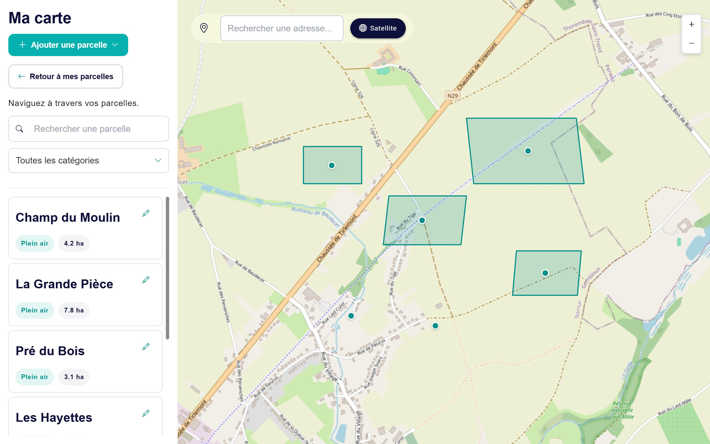
À gauche, vos parcelles ; à droite, la carte.
À gauche : la liste de vos parcelles
Une carte par parcelle : son nom, sa catégorie et sa superficie.
Cliquez sur une parcelle : la carte se déplace jusqu'à elle et la colore en jaune.
Le crayon ouvre son formulaire (voir « Modifier une parcelle » plus bas).
« Rechercher une parcelle » et « Toutes les catégories » filtrent la liste, comme sur la page Parcelles.
À droite : la carte
Se déplacer : cliquez-glissez sur la carte (sur smartphone : glissez le doigt).
Zoomer : boutons + et − en haut à droite, ou la molette de la souris (sur smartphone : écartez ou rapprochez deux doigts).
Les parcelles dessinées ou importées apparaissent avec leur contour vert ; un rond vert marque leur centre, ou l'emplacement des parcelles créées par point ou par adresse.
Cliquez sur une parcelle sur la carte pour voir son nom, sa catégorie, sa superficie et ses coordonnées.
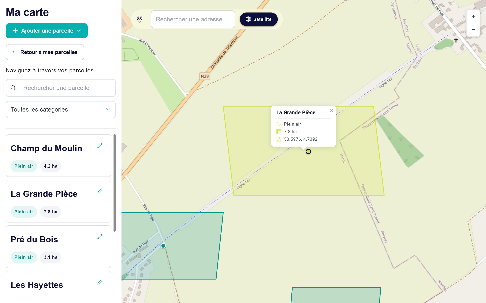
« La Grande Pièce » choisie dans la liste : elle est colorée en jaune et ses informations s'affichent.
Trouver un lieu sur la carte
Tapez une adresse, une rue ou un village dans « Rechercher une adresse… », en haut de la carte (au moins 3 lettres, en Belgique).
Cliquez sur la bonne proposition.
La carte se centre sur ce lieu, qui est marqué quelques secondes par une épingle.
Pratique pour aller directement à l'endroit où vous voulez dessiner une parcelle.
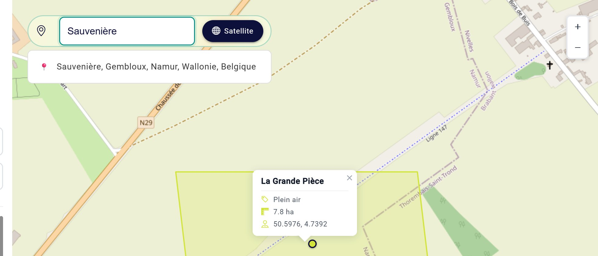
Plan ou vue satellite
Le bouton Satellite (sur smartphone : l'icône en forme de globe 🌐) affiche la photo aérienne à la place du plan. Les limites des champs, les chemins et les haies y sont bien plus faciles à repérer pour dessiner une parcelle. Cliquez à nouveau pour revenir au plan.
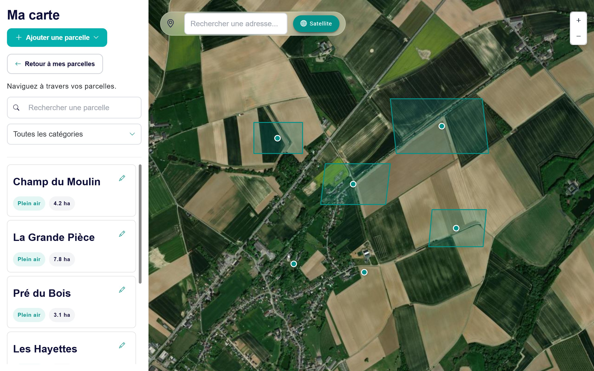
La vue satellite.
Ajouter une parcelle depuis la carte
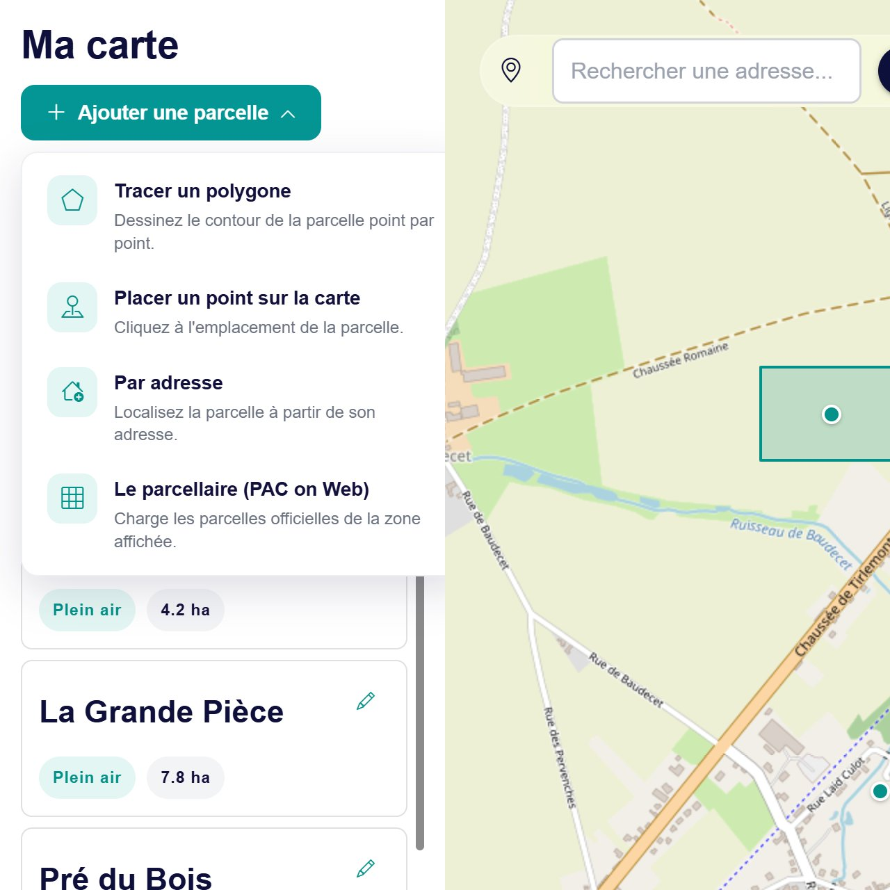
Cliquez sur Ajouter une parcelle, en haut à gauche. Quatre choix :
Choix
Résultat
Tracer un polygone
Le contour exact, dessiné par vous. La superficie est calculée automatiquement.
Placer un point sur la carte
Un simple point à l'emplacement de la parcelle.
Par adresse
Comme sur la page Parcelles (chapitre 5).
Le parcellaire (PAC on Web)
Reprendre une parcelle officielle, avec son contour.
Tracer le contour d'une parcelle (polygone)
Placez la carte sur votre parcelle (recherche d'un lieu, zoom) et passez en vue satellite pour bien voir ses limites.
Ajouter une parcelle › Tracer un polygone. Le pointeur devient une croix.
Cliquez sur chaque coin de la parcelle, l'un après l'autre, en faisant le tour. Le premier point est rouge, les suivants verts ; un bandeau en haut compte les points placés.
Quand vous avez placé au moins 3 points, cliquez sur le premier point (rouge) ou sur Fermer pour terminer le contour.
Le formulaire « Parcelle tracée en polygone » s'ouvre : tapez le nom, vérifiez la superficie, choisissez la catégorie, puis Enregistrer.
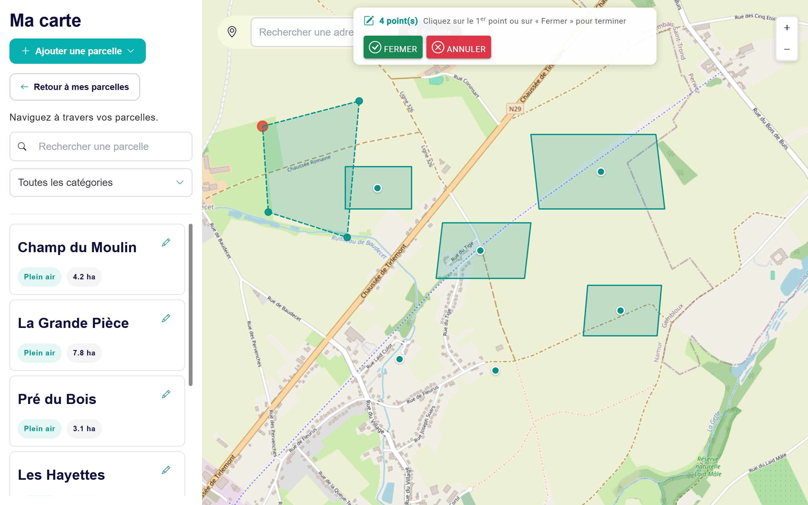
Trois points placés. Le premier, en rouge, sert à fermer le contour.
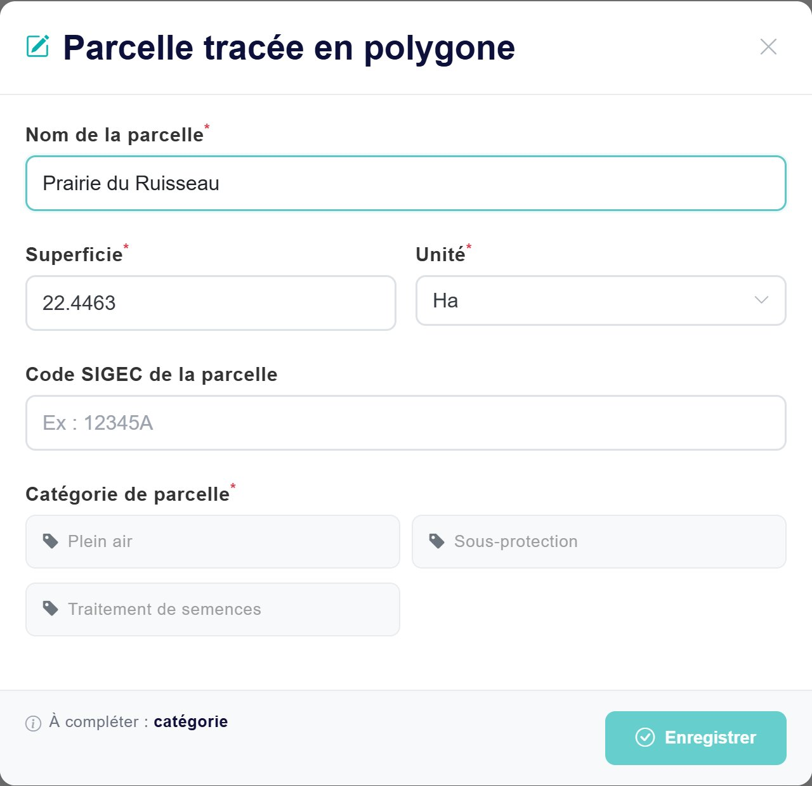
La superficie est calculée à partir du tracé.
La superficie est remplie automatiquement, en hectares, à partir du contour. Vous pouvez la corriger. Si vous changez l'unité (a ou m²), le nombre est converti.
Pas d'adresse à donner : la parcelle est localisée par son contour.
Annuler (dans le bandeau) efface le tracé en cours ; la croix du formulaire le ferme sans enregistrer.
Plus de points, plus de précisionPour un champ aux bords courbes, placez davantage de points le long de la courbe. Vous pourrez toujours corriger le tracé ensuite.
Placer un point
Ajouter une parcelle › Placer un point sur la carte.
Cliquez une fois sur la carte, au centre de la parcelle. Une épingle verte « Point sélectionné » apparaît.
Le formulaire « Ajouter par point GPS » s'ouvre : tapez le nom, la superficie (elle n'est pas calculée, puisqu'il n'y a pas de contour), choisissez l'unité et la catégorie, puis Enregistrer.
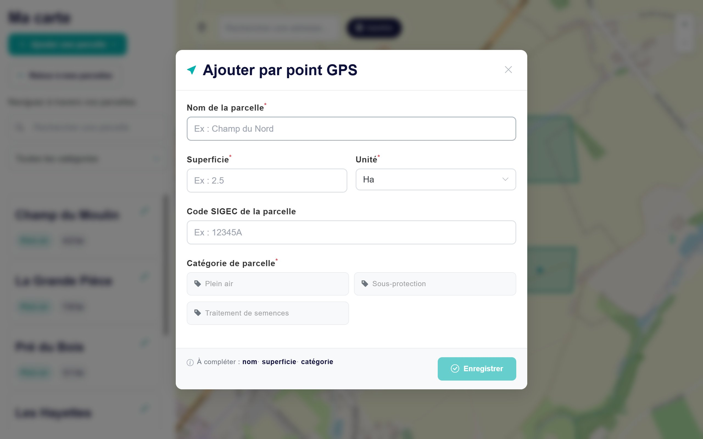
Le formulaire « Ajouter par point GPS ».
Reprendre une parcelle du parcellaire PAC
Le parcellaire PAC montre sur la carte les parcelles agricoles officielles (le dessin des parcelles de la PAC en Wallonie). Vous pouvez en choisir une pour la créer dans Appi'Field avec son contour, sans rien dessiner.
Zoomez sur la zone de vos parcelles. Le parcellaire ne se charge qu'à partir d'un zoom suffisant ; sinon, le menu indique « Zoomez davantage pour afficher le parcellaire ».
Ajouter une parcelle › Le parcellaire (PAC on Web). Patientez quelques secondes (« Chargement… ») : les parcelles officielles de la zone affichée apparaissent en rouge.
Cliquez sur la parcelle qui vous intéresse.
Le formulaire « Encoder une parcelle PAC » s'ouvre, déjà rempli : nom « Parcelle PAC » suivi d'un numéro, superficie officielle, catégorie « Plein air ». Renommez-la, vérifiez le reste, puis Enregistrer.
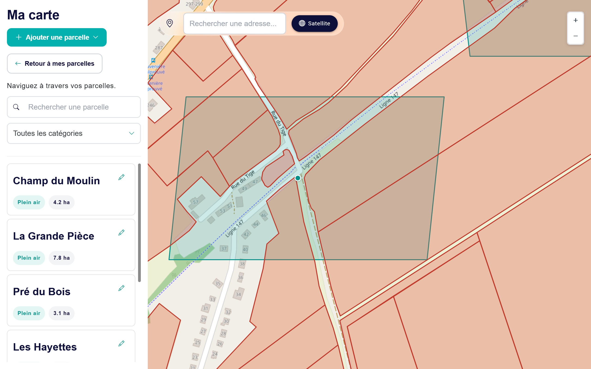
Le parcellaire PAC (en rouge) par-dessus vos parcelles (en vert).
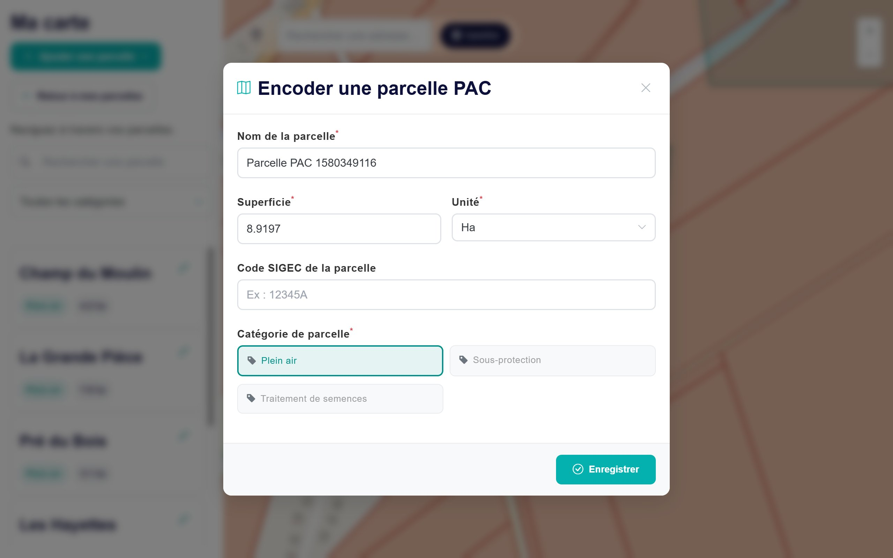
Le formulaire, prérempli à partir de la parcelle choisie.
Si vous déplacez la carte vers une autre zone, relancez Le parcellaire (PAC on Web) pour charger cette zone.
Retirer les tuiles du parcellaire (dans le même menu) efface les parcelles rouges de la carte.
Parcellaire ou import GML ?Si vous avez votre fichier GML, l'import (chapitre 5) crée toutes vos parcelles d'un coup. Le parcellaire est pratique pour ajouter une parcelle à la fois, ou si vous n'avez pas le fichier.
Modifier une parcelle et corriger son tracé
Cliquez sur le crayon de la parcelle, dans la liste de gauche.
Le formulaire « Modifier la parcelle » s'ouvre. Vous pouvez y changer le nom, la superficie, la catégorie, ou Supprimer la parcelle (mêmes précautions qu'au chapitre 5).
Pour une parcelle qui a un contour, le bouton Modifier le tracé permet de le corriger.
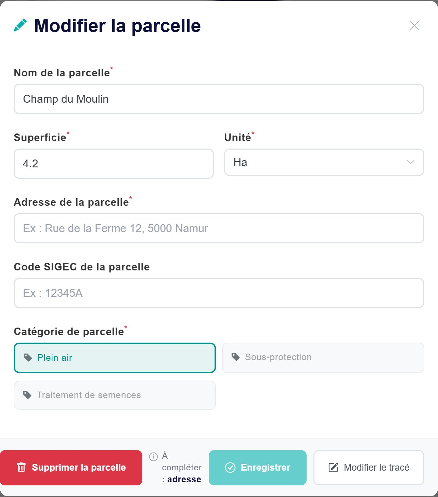
Le formulaire de modification, avec le bouton « Modifier le tracé ».
Corriger le tracé
Après Modifier le tracé, le contour apparaît avec des poignées (petits ronds blancs) :
Pour…
Faites ceci
Déplacer un coin
Attrapez sa poignée et faites-la glisser.
Ajouter un coin
Cliquez sur la petite poignée au milieu d'un côté : elle devient un nouveau coin.
Supprimer un coin
Double-cliquez sur sa poignée (sur smartphone : touchez-la deux fois rapidement). Il faut garder au moins 3 coins.
Valider
Terminer : le formulaire s'ouvre avec la nouvelle superficie ; cliquez sur Enregistrer.
Abandonner
Annuler : l'ancien tracé est conservé.
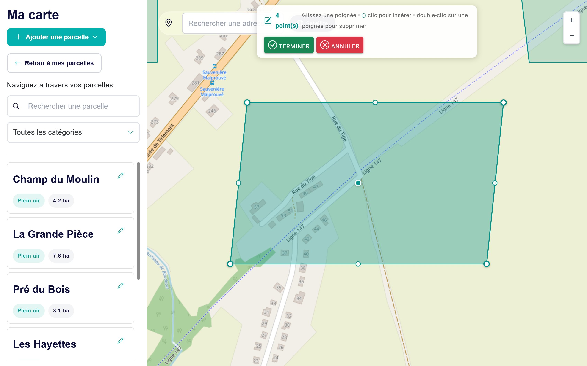
Les poignées : aux coins pour déplacer, au milieu des côtés pour ajouter un coin.
La superficie est recalculéeAprès une correction du tracé, la superficie est recalculée à partir du nouveau contour. Le message « Le tracé de la parcelle … a été mis à jour avec succès ! » confirme l'enregistrement.
Pour une parcelle créée par adresse ou par point, il n'y a pas de contour : le bouton Modifier le tracé n'apparaît pas. Pour lui donner un contour, tracez-la comme une nouvelle parcelle, puis supprimez l'ancienne si elle n'a encore jamais été utilisée.
Sur smartphone
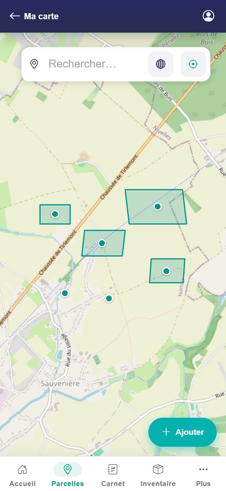
La carte occupe tout l'écran.
La carte occupe tout l'écran. En haut : la recherche d'un lieu, le globe (vue satellite) et le bouton Ma position (une cible).
Le bouton + Ajouter, en bas à droite, ouvre un panneau avec les quatre méthodes : tracer un polygone, placer un point, par adresse, parcellaire PAC.
Pour tracer, touchez la carte à chaque coin de la parcelle. Les boutons Fermer polygone et Annuler tracé apparaissent en bas de l'écran.
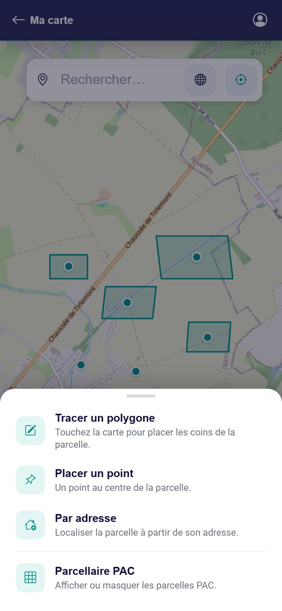
Le panneau « Ajouter ».
Ma position : dessiner au bord du champ
Sur smartphone, le bouton Ma position (la cible, en haut à droite) centre la carte sur l'endroit où vous vous trouvez, marqué par un rond bleu « Vous êtes ici ». Le cercle bleu clair autour indique la précision de la position.
Allez au bord de votre parcelle, téléphone en main.
Touchez Ma position. La première fois, le téléphone demande l'autorisation d'utiliser votre position : acceptez.
Votre parcelle est sous vos yeux : tracez-la ou placez un point.
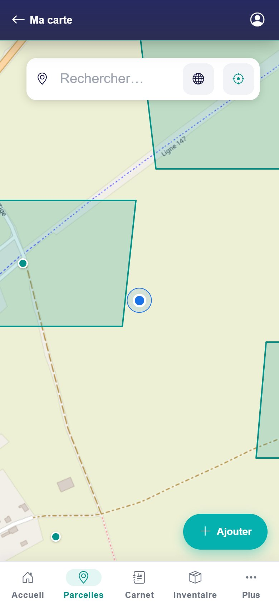
Le rond bleu : votre position.
Message
Que faire ?
« Autorisez la localisation pour Appi'Field dans les réglages du téléphone, puis réessayez. »
Vous avez refusé l'accès à votre position. Autorisez-le dans les réglages du téléphone (rubrique localisation ou confidentialité, pour votre navigateur ou pour Appi'Field).
« La localisation prend trop de temps. » / « Position introuvable pour le moment. »
Activez la localisation du téléphone, mettez-vous à découvert et réessayez.
« La localisation n'est pas disponible sur cette adresse… »
Vous n'utilisez pas l'adresse officielle d'Appi'Field (sécurisée, en https) : ouvrez l'application depuis son adresse habituelle.
Questions fréquentes sur la carte
Le parcellaire PAC ne s'affiche pas.
Zoomez davantage, puis relancez Le parcellaire (PAC on Web). Le chargement peut prendre quelques secondes.
J'ai mal placé un point pendant le tracé.
Terminez le contour, enregistrez, puis corrigez avec Modifier le tracé. Ou cliquez sur Annuler et recommencez.
La superficie calculée est différente de ma déclaration.
Elle dépend de la précision du tracé. Corrigez le tracé, ou tapez directement la bonne superficie dans le formulaire.
Je ne vois pas mes parcelles sur la carte.
Cliquez sur une parcelle dans la liste de gauche : la carte se déplace jusqu'à elle. Une parcelle sans contour, sans point et sans adresse ne peut pas être affichée.
Le bouton « Ma position » n'apparaît pas sur mon ordinateur.
Il n'est proposé que sur smartphone et petite tablette. Sur ordinateur, utilisez la recherche d'un lieu.